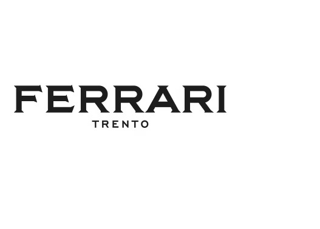
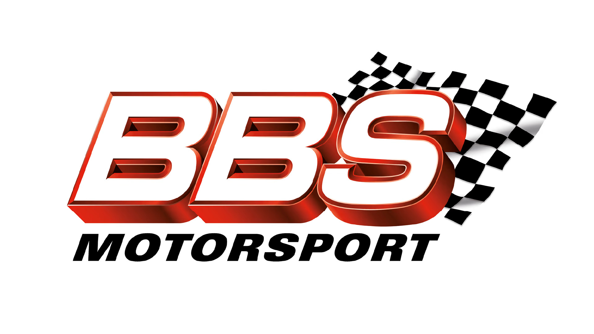

Formula 1 Partners
Global Partners

Aramco is a global integrated energy and chemicals company. We are driven by the core belief that energy is opportunity. From producing approximately one in every eight barrels of the world’s oil supply to developing new energy technologies, our global team is dedicated to creating impact in all that we do. We focus on making our resources more dependable, more sustainable and more useful. This helps promote stability and long-term growth around the world. www.aramco.com

Using Amazon SageMaker, Formula 1’s data scientists are training deep learning models with more than 65 years of historical race data, stored in Amazon S3. With this information, Formula 1 can extract critical race performance statistics to make race predictions and give fans insight into the split-second decisions and strategies adopted by teams and drivers.
Formula 1 can capture and process key performance data for each car during every twist and turn of the Formula 1 circuits with unmatched accuracy and speed. F1 and Amazon Kinesis can stream real-time race data and by deploying advanced machine learning via Amazon SageMaker, Formula 1 can pinpoint how a driver is performing and whether or not drivers have pushed themselves over the limit. By sharing these insights with fans through television broadcasts and digital platforms, Formula 1 is improving the fan experience, allowing them to dive deep into the inner workings of their favourite teams and drivers. For more information, visit aws.amazon.com
Founded in 2016, Crypto.com today serves over 10 million customers with the world’s fastest growing crypto app, along with the Crypto.com Visa Card — the world’s largest crypto card program — the Crypto.com Exchange and Crypto.com DeFi Wallet. Recently launched, Crypto.com NFT is the premier platform for collecting and trading NFTs, carefully curated from the worlds of art, design, entertainment and sports.
Crypto.com is built on a solid foundation of security, privacy and compliance and is the first cryptocurrency company in the world to have ISO/IEC 27701:2019, CCSS Level 3, ISO27001:2013 and PCI:DSS 3.2.1, Level 1 compliance, and independently assessed at Tier 4, the highest level for both NIST Cybersecurity and Privacy Frameworks.
With over 1,500 people in offices across the Americas, Europe and Asia, Crypto.com is accelerating the world’s transition to cryptocurrency. Find out more: crypto.com and crypto.com/NFT

DHL draws on over 35 years of motorsports experience to ensure that the “race behind the race” runs smoothly at all times. As the Global Logistics Partner of Formula 1, DHL manages the complex shipping of up to 2,000 tons of freight to the racetracks including cars, replacement parts, marketing and hospitality equipment. In doing so, DHL provides a multi-modal transport solution, using land, sea and air freight, depending on the race calendar requirements.
In collaboration with Formula 1, DHL aims to create spectacular moments that deliver both on off the track. DHL presents the DHL Fastest Lap Award and the DHL Fastest Pit Stop Award, bespoke prizes which recognize the exceptional performances of both the drivers and their supporting teams. In this new era of the greatest racing spectacle on the planet, DHL is also pioneering new grounds with F1 as the first official partner of the F1 ESports Series.
DHL, part of Deutsche Post DHL Group, is the leading global brand in the logistics industry. Operating in more than 220 countries and territories worldwide, our DHL family of divisions offer an unrivalled portfolio of logistics services ranging from national and international parcel delivery, ecommerce shipping and fulfilment solutions, international express, road, air and ocean transport to industrial supply chain management.
DHL connects people and businesses securely and reliably, enabling global trade flows. With specialized solutions for growth markets and industries, DHL is decisively positioned as “The logistics company for the world”. For more information, visit dhl.com
Wherever you go in the world, it’s always refreshing to see something you recognise. That green bottle, the red star, the smiling ‘e’… like an instant welcome from an old friend. Cold, fresh, high quality Heineken. From its origins as a 19th-century local beer, brewed in Amsterdam, Heineken has transformed into a global icon. Sold in more than 192 countries and territories, Heineken is the world’s most international premium beer brand. For more information, visit heineken.com

MSC Cruises is the world’s third largest cruise brand as well as the leader in Europe, South America, the Middle East and Southern Africa with more market share in addition to deployed capacity than any other player. It is also the fastest growing global cruise brand with a strong presence in the Caribbean, North America and the Far East markets.
Headquartered in Geneva, Switzerland, MSC Cruises has a modern fleet of 19 vessels with two new ships launching in 2022, combined with a sizeable future global investment portfolio of new vessels. The fleet is projected to grow to 23 cruise ships by 2025 with options for six more vessel orders in place through 2030.
MSC Cruises offers its guests an enriching, immersive and safe cruise experience inspired by the Company’s European heritage, where they can enjoy international dining, world-class entertainment, award-winning family programmes and the very latest user-friendly technology on board.
MSC Cruises has long been committed to environmental stewardship with a long-term goal to achieve net zero emissions for its operations by 2050. The Company is also a significant investor in next-generation environmental marine technologies, with the objective to support their accelerated development and availability industry-wide.
Established in 1872, Pirelli is among the world’s leading tyre producers. It is the only pure consumer tyre company that includes car, motorbike, and bicycle tyres as well as associated services.
Pirelli has a distinct positioning in high value tyres, characterised by an advanced technology with more than 2,400 homologations obtained, thanks to partnerships with the most prestigious car manufacturers in the world. In order to achieve the highest levels of performance, safety and containment of environmental impact, Pirelli has always been strongly committed to research and development, in which it invested 6.1% of revenue from high-value products in 2018.
Involved in motorsport since 1907, Pirelli has been the exclusive official tyre partner of the Formula 1 World Championship since 2011 and has just renewed the agreement until 2023. For more information, visit the Pirelli website.

Qatar Airways, the national carrier of the State of Qatar, became the Official Airline and Global Partner of Formula 1 through an innovative partnership until the 2027 season, bringing thrills and exciting speeds to fans globally.
The airline's dynamic worldwide network of more than 150 destinations combined with Formula 1's ever-expanding foothold in motorsport make the perfect vehicle to unite people of various ages and backgrounds through the power of sport. Qatar Airways as a brand is committed to supporting global sports, helping fans travel to their favourite events wherever they may be. The airline is a leading global football supporter, with partnerships including FIFA™, Paris Saint-Germain, FC Bayern, Concacaf and CONMEBOL. Additionally, Qatar Airways is the official airline of the Ironman and Ironman 70.3 Triathlon Series, Official Airline Partner of the United Rugby Championship (URC), Global Kitesports Association and multiple other disciplines including equestrianism, padel, squash and tennis.
A multiple award-winning airline, Qatar Airways was announced as the ‘Airline of the Year’ at the 2022 World Airline Awards, managed by the international air transport rating organisation, Skytrax. It was also named ‘World’s Best Business Class’, ‘World’s Best Business Class Airline Lounge’, ‘World’s Best Business Class Airline Seat’, ‘World’s Best Business Class Onboard Catering’ and ‘Best Airline in the Middle East’. The airline continues to stand alone at the top of the industry having won the main prize for an unprecedented seventh time (2011, 2012, 2015, 2017, 2019, 2021 and 2022).
Qatar Airways flies to more than 150 destinations worldwide, connecting through its Doha hub, Hamad International Airport, voted by Skytrax as the ‘World’s Best Airport’ 2022. For more information, visit qatarairways.com
Rolex is an integrated and independent Swiss watch manufacturer. Headquartered in Geneva, the brand is recognized the world over for its expertise and the quality of its products – symbols of excellence, elegance and prestige. The movements of its Oyster Perpetual and Perpetual watches are certified by COSC, then tested in-house for their precision, performance and reliability. The Superlative Chronometer certification, symbolized by the green seal, confirms that each watch has successfully undergone tests conducted by Rolex in its own laboratories according to its own criteria. These are periodically validated by an independent external organization.
The word ‘Perpetual’ is inscribed on every Rolex Oyster watch. But more than just a word on a dial, it is a philosophy that embodies the company’s vision and values. Hans Wilsdorf, the founder of the company, instilled a notion of perpetual excellence that would drive the company forward. This led Rolex to pioneer the development of the wristwatch and numerous major watchmaking innovations, such as the Oyster, the first waterproof wristwatch, launched in 1926, and the Perpetual rotor self-winding mechanism, invented in 1931. In the course of its history, Rolex has registered over 600 patents. At its four sites in Switzerland, the brand designs, develops and produces the majority of its watch components, from the casting of the gold alloys to the machining, crafting, assembly and finishing of the movement, case, dial and bracelet. Furthermore, the brand is actively involved in supporting the arts and culture, sport and exploration, as well as those who are devising solutions to preserve the planet.
For more information, visit rolex.com
Salesforce is the world’s #1 customer relationship management (CRM) platform. We help your marketing, sales, commerce, service, and IT teams work as one from anywhere — so you can keep your customers happy everywhere. Salesforce is excited to join the fast-paced world of Formula 1, partnering to connect with its global fanbase in a whole new way and accelerate Formula 1’s goal to be carbon neutral by 2030.
Formula 1 will use the power of Salesforce Customer 360 to wow its global fanbase with insights that drive a deeper understanding of fans and inform behaviours, communication, and actions with them as they engage with the sport. The result is a winning formula for fans, helping them get closer to the action than ever before and creating wow moments at every turn.
In addition to a richer understanding of fan data, Formula 1 will work with Salesforce to gain actionable insights from Formula 1’s carbon footprint, helping to accelerate its mission to reach net zero emissions by 2030. Both efforts will further strengthen Formula 1 fans’ connection to the sport and sustainability efforts, creating long-lasting and loyal relationships worldwide.
For more information, visit Salesforce.com.
Global Partners

Founded in 1902 in Trento by Giulio Ferrari and since 1952 run by the Lunelli family, Ferrari is Italy’s leading traditional method winery and a symbol of the Italian Art of Living.
All Ferrari labels are Trentodoc; bottle fermented sparkling wines produced with Chardonnay and Pinot Noir grapes cultivated with passion and respect following the principles of sustainable mountain viticulture in northern Italy’s Trentino.
Ferrari Trento was named three times “Sparkling Wine Producer of the Year” by The Champagne and Sparkling Wine World Championships, the most important competition in the world dedicated only to bubbles.
Ferrari is the toast of Italy par excellence and accompanies the most important moments in culture, sport and entertainment.
Founded in 2003 by four friends, Martin Migoya, Guibert Englebienne, Martin Umaran and Nestor Nocetti, Globant is a digitally native company that helps organizations reinvent themselves and unleash their potential. As an Official Partner, Globant will build best in class IT systems integrations and products for Formula 1. Globant delivery teams will use their industry expertise and innovative technology to transform and enhance the at-event digital experiences for F1 fans and key stakeholders, including the content delivery system used on the pit wall, a real-time streaming solution that provides F1 and key stakeholders with unique multi-channel media. For more information, visit globant.com

Lenovo (HKSE: 992) (ADR: LNVGY) is a US$60 billion revenue Fortune Global 500 company serving customers in 180 markets around the world. Focused on a bold vision to deliver smarter technology for all, we are developing world-changing technologies that power (through devices and infrastructure) and empower (through solutions, services and software) millions of customers every day and together create a more inclusive, trustworthy and sustainable digital society for everyone, everywhere. To find out more visit https://www.lenovo.com, and read about the latest news via our StoryHub

With around 4,000 items, LIQUI MOLY offers a global, uniquely broad range of automotive chemicals: Motor oils and additives, greases and pastes, sprays and car care, glues and sealants. Founded in 1957, LIQUI MOLY develops and produces exclusively in Germany. There it is repeatedly voted the best oil brand. The company sells its products in more than 150 countries and generated € 800 million in sales in 2022. For more information, visit liqui-moly.com
Paramount+ is a global digital subscription video streaming service from Paramount that features a mountain of premium entertainment for audiences of all ages. Internationally, the streaming service features an expansive library of original series, hit shows and popular movies across every genre from world-renowned brands and production studios, including SHOWTIME®, CBS, Comedy Central, MTV, Nickelodeon, Paramount Pictures and the Smithsonian Channel™, in addition to a robust offering of premier local content. The service is currently live in the U.S., Canada, the U.K., Australia, Latin America, the Caribbean, Austria, France, Germany, Ireland, Italy, Switzerland and South Korea. For more information, visit paramountplus.com
Regional Partners

188BET is licensed and regulated by the Philippine Amusement and Gaming Corporation (PAGCOR) to operate and offer the Services via electronic media. 188BET offers one of the most rewarding Sports betting, eSports, Progressive Slots, Live Casino and online gaming experience. For more information visit 188BET.com.

American Express is a globally integrated payments company, providing customers with access to products, insights and experiences that enrich lives and build business success. Learn more at americanexpress.com.
Key links to products, services and corporate sustainability information: personal cards, business cards and services, travel services, gift cards, prepaid cards, merchant services, Accertify, Business Blueprint, Resy, corporate card, business travel, diversity and inclusion, corporate sustainability and Environmental, Social, and Governance reports.
Arcos Dorados is the world’s largest independent McDonald’s franchisee, operating the largest quick-service restaurant chain in Latin America and the Caribbean. It has the exclusive right to own, operate, and grant franchises of McDonald’s restaurants in 20 Latin American and Caribbean countries and territories. The alliance between McDonald's and Formula 1 not only highlights both brands' commitment to excellence and speed but also demonstrates their shared passion for innovation and teamwork, which can be easily seen at both the restaurants’ kitchens and the Formula 1 pits.
This collaboration is key to Arcos Dorados' digital strategy, which integrates advanced technology with a highly trained team to provide agile and high-quality service. Arcos Dorados and McDonald’s in Latin America and the Caribbean are also committed to the development of the communities, to providing young people their first formal job opportunities, and to utilize its Scale for Good to achieve a positive environmental impact. More on www.arcosdorados.com.
Workday is a leading provider of enterprise cloud applications for finance and human resources, helping customers adapt and thrive in a changing world. Workday applications for financial management, human resources, planning, spend management, and analytics have been adopted by thousands of organizations around the world and across industries - from medium-sized businesses to more than 50% of the Fortune 500. For more information about Workday, visit workday.com
Official Partners

Be it design, engineering, mechanical processing or finishing, BBS are the specialists and work together as a close-knit team when designing and manufacturing light alloy wheels. They have the know-how. Their outstanding knowledge – ranging from material processing through to the assembly and finishing of every single component – is the reason why they are able to produce extraordinary wheels that satisfy the most demanding customer requirements. For more information, visit BBS Japan Website.
PUMA is one of the world’s leading sports brands, designing, developing, selling and marketing footwear, apparel and accessories. For more 75 years, PUMA has relentlessly pushed sport and culture forward by creating fast products for the world’s fastest athletes. PUMA offers performance and sport-inspired lifestyle products in categories such as Football, Running and Training, Basketball, Golf, and Motorsports. It collaborates with renowned designers and brands to bring sport influences into street culture and fashion. The PUMA Group owns the brands PUMA, Cobra Golf and stichd. The company distributes its products in more than 120 countries, employs about 20,000 people worldwide, and is headquartered in Herzogenaurach/Germany. For more information, visit puma.com

Tata Communications is a global digital ecosystem enabler powering today’s fast growing digital economy in more than 190 countries and territories. Leading with trust, we are enabling digital transformation of enterprises globally with collaboration and connected solutions, core and next gen connectivity, cloud hosting and security solutions and media services. 300 of the Fortune 500 companies are our customers and the company connects businesses to 80% of the world’s cloud giants.
Tata Communications enjoys a longstanding relationship with Formula 1, enabling reach and delivery to millions of fans worldwide through low latency broadcast ready network and media native cloud solutions, tailored for global sports events worldwide. We bring fully managed video contribution services aggregating live broadcast feeds from venues globally to F1's Remote Technical Centre in London and for global distribution for various rights holding broadcasters. The low latency and remote operation capabilities allow F1 to analyse race data and produce stunning broadcast productions while supporting the sport's drive to remain agile and sustainable. Tata Communications is on a mission of empowering F1 for tomorrow, today. For more information, please visit https://www.tatacommunications.com/sports/powering-f1/.
F1 Esports Official Partners
Aramco is a global integrated energy and chemicals company. We are driven by the core belief that energy is opportunity. From producing approximately one in every eight barrels of the world’s oil supply to developing new energy technologies, our global team is dedicated to creating impact in all that we do. We focus on making our resources more dependable, more sustainable and more useful. This helps promote stability and long-term growth around the world. saudiaramco.com
Want to experience the thrills of driving an F1 car yourself? Use Fanatec professional simulation hardware to get as close as possible to reality. Fanatec is the leading brand for dedicated sim racing hardware such as force feedback steering wheels, pedals, and complete cockpits for PlayStation, Xbox, and PC based racing simulators. All products are engineered in Germany and not only used by passionate gamers, but also by F1 race drivers for training purposes. As the official supplier and partner of the F1 Esports Series, Fanatec delivers the tools to become faster on both virtual and real race tracks. For more information, visit FANATEC.com